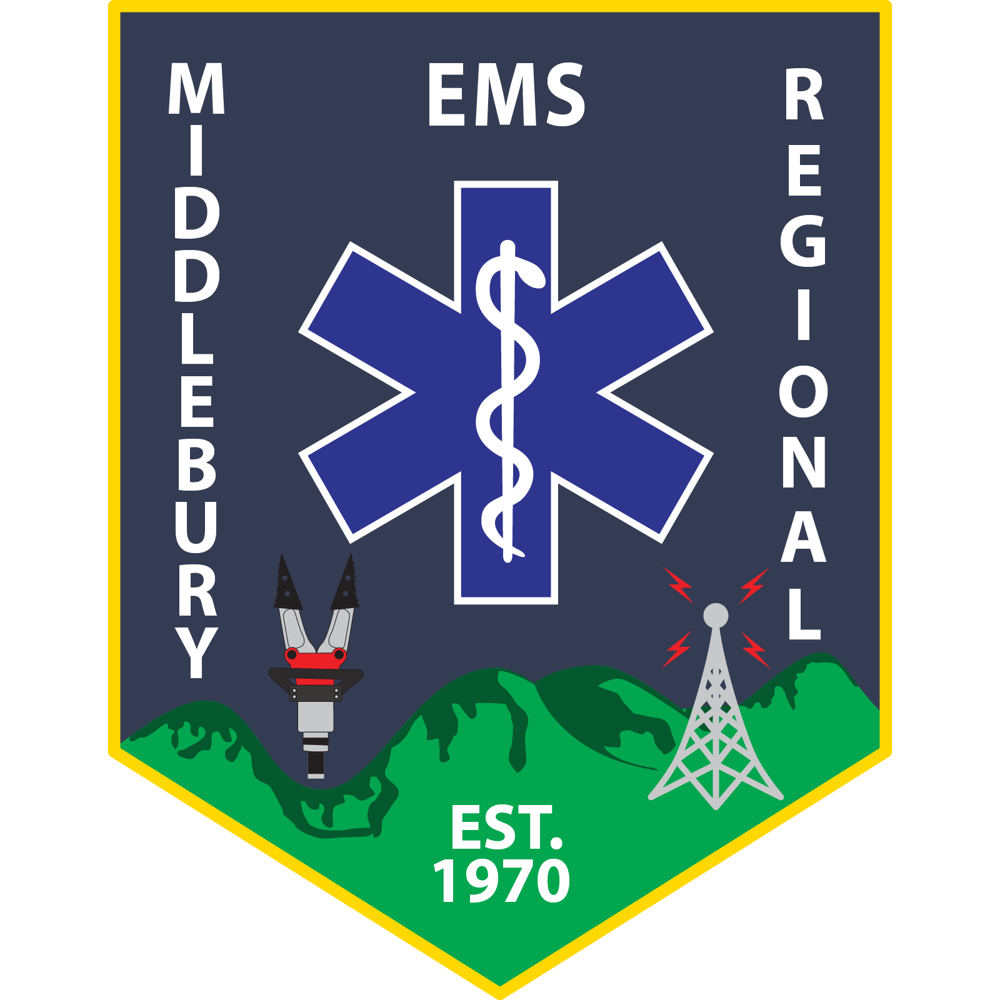

I am a student scientist who has worked in both the healthcare and research spaces. These experiences have granted me strong analytical and quantitative abilities as well as the capacity to think on my feet. I am passionate about working at the intersection of healthcare, technology, and equal access.
Designed a semester-long Independent Research Project to examine the effect of letrozole on spatial memory learning strategies and Brain-Derived Neurotrophic Factor (BDNF) with in vivo rat studies Performed tissue grinding and observed ELISA immunoassays to measure circulating testosterone concentration and structure-specific BDNF levels Conducted castration surgeries, injections of analgesics and DHT steroid treatments, and plus maze testing (Khodadad, Shi Thesis; Guo Thesis) Received competitive grant from Biology Undergraduate Research Fund Analyzed and modeled behavioral testing data from large dataset and presented findings at Middlebury’s Research Symposium & Neuroscience 2022 (San Diego, CA)
Assisted with navigation to a new integrated Health Services database which digitized critical medical information for nearly 130 residents Created a volunteer organization (MiddHelpingHands) connecting STEM students with three separate elderly care communities at EastView Provided career for up to fifteen elderly residents daily, specifically those living with cognitive decline
Participant in a rigorous mentor-driven, hands-on leadership program for innovation and entrepreneurship with a focus on consulting, innovation, strategic thinking, social entrepreneurship, and business.

Elected lead intern by Health Professions Committee Maintained healthy group culture, managed transportation, and provided peer academic support for twenty students in an accelerated EMT-B certification course